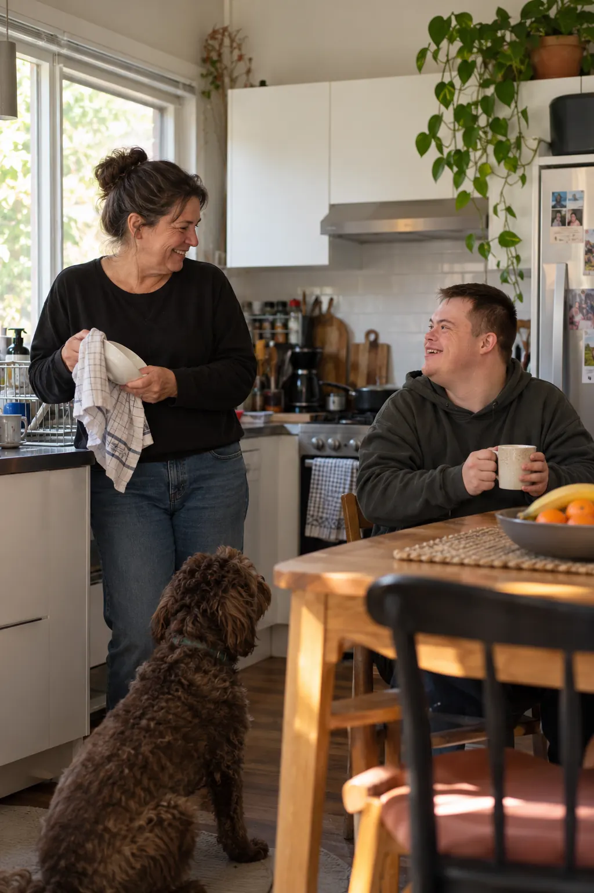

Individual SIL support, built around your life
Need daily living support without automatically moving into a group home? Let’s explore what may be possible.

What is individual SIL?
Supported Independent Living (SIL) may fund eligible help or supervision with daily tasks. It is a support model, not a property or accommodation payment. Depending on individual circumstances and NDIS decisions, SIL supports may be delivered in an individual living arrangement.
Living alone or with people you choose
A living arrangement may involve living alone or sharing with someone you choose. We consider support needs, safety, staffing feasibility, housing responsibilities and funding before making any commitment.
How Kukoon approaches it
We begin with your preferences, review the support you need, explore practical arrangements and identify the relevant decision-makers and funding pathway. We do not promise one-to-one staffing or funding unless confirmed.
Daily living support without assuming a group home.
Individual SIL may be worth exploring when a participant needs eligible assistance or supervision with daily tasks. We consider how support could work in the person’s preferred home, including staffing, safety, funding and practical feasibility. SIL does not pay for the property or guarantee one-to-one staffing.